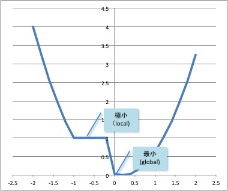

経済学で出る数学
ワークブックでじっくり攻める：応用問題
準凸関数の最小点と極小点
準凸関数の最小値の大域性は，凸関数よりやや制限が加わる．凸関数のときは，
$極小 \Rightarrow 最小$ だったが，準凸関数の場合は下図に見るようにかならずしもそうは言えない．

【問】いま $f$ が準凸関数であるとき，狭義の極小点は狭義の最小点であることを示しなさい．
【解答】
$x^*$ を $f$ の狭義の極小点とする．すなわち，どんな $y\neq x^*$ に対しても，
$y$ が $x^*$ に十分近ければ、$f(x^*) < f(y)$ となっている．
$x^*$ が狭義の最小点であることを否定してみよう．
すると $f(\bar{x})\leq f(x^*)$ となる $\bar{x}\neq x^*$ があることになる．
$f(x)$ が準凸関数であることより，
$0 \leq \lambda \leq 1$ を満たすどんな
$\lambda$ に対しても，
\[
f((1-\lambda )x^*+\lambda \bar{x}) \leq f(x^*)
\]
となる．したがって，
$\lambda \to 0$ とすると，$x^*$ の狭義の極小性に反することになる．
【解答終】
【Further Reading】
M. Avriel, ‘Nonlinear Programming: Analysis and Methods’, Prentice Hall（1976）
ふろく（２）応用問題 一覧へ